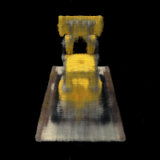
Overview
In this project, I move from 2D image fitting to full 3D Neural Radiance Fields (NeRF). I start by calibrating a real camera, estimating poses from ArUco tags, and packaging my own multi-view scan into a NeRF-ready dataset. Then I:
- Fit a 2D neural field to an image using positional encoding and an MLP.
- Implement camera geometry, ray sampling, and volume rendering for NeRF.
- Train a NeRF on the provided Lego scene and visualize training + novel views.
- Collect my own dataset and train a NeRF on a real object, including a novel-view GIF.
All neural networks are implemented in PyTorch, with custom ray generation and volume
rendering; visualization uses viser for camera frustums and ray plots.
Part 0 — Camera Calibration & 3D Scanning
In Part 0, I calibrated my camera intrinsics with ArUco tags, estimated camera poses for a real object, and packaged everything into an NPZ dataset. This dataset is later used to train a NeRF on my own object in Part 2.6.
0.1 — Camera Calibration with ArUco Tags
I printed an ArUco calibration grid and captured ~30–50 images on my phone at a fixed zoom.
For each image, I detected markers with OpenCV’s ArUco detector, collected the 2D corner
coordinates, and paired them with known 3D corners in tag coordinates (e.g., a 6 cm tag
on the z=0 plane).
- Used
cv2.aruco.detectMarkersto find tag corners. - Defined tag corner positions in meters relative to the tag center.
- Called
cv2.calibrateCamerato recover intrinsicsKand distortion coefficients. - Saved calibration results to
data/calibration.npzfor later use.
0.2 — 3D Object Capture with a Single ArUco Tag
I chose my DSLR camera as my custom object and placed it next to a printed single ArUco tag on the floor in my room. Again using my phone at the same zoom, I captured multi-view images by moving around the object and varying both azimuth and elevation (horizontal and vertical angles).
- Approximately 30–50 views, with the object filling ~50% of the frame.
- Constant exposure settings to avoid flicker and brightness jumps.
- Each frame includes the tag for pose estimation.
0.3 — Pose Estimation (PnP) & Viser Visualization
With intrinsics known, I estimate camera pose per frame using Perspective-n-Point (PnP) on the ArUco tag corners:
- Detect the single tag and extract its 2D corners.
- Use the same 3D tag corner coordinates as in calibration.
- Call
cv2.solvePnPwith(objectPoints, imagePoints, K, distCoeffs). - Convert
rvecto a rotation matrix withcv2.Rodriguesand build the world-to-camera and camera-to-world matrices.
I used viser to visualize the resulting camera frustums in 3D, sanity-checking
that the camera centers roughly orbit the tag/object and that orientations look consistent.
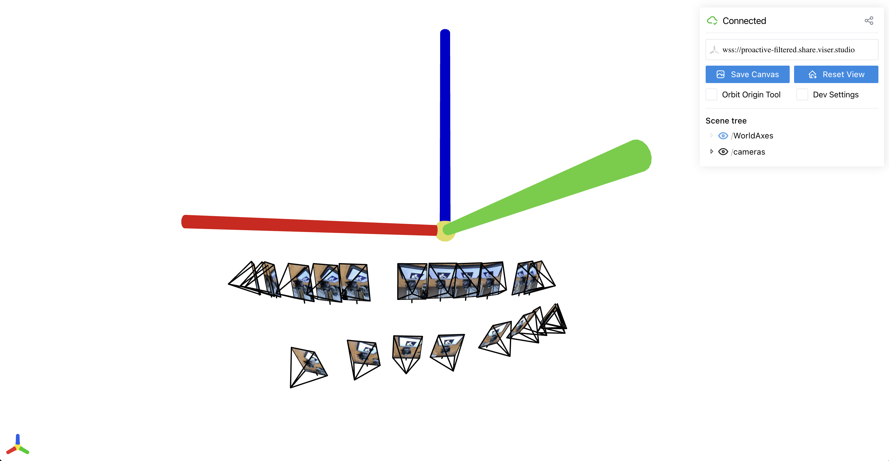
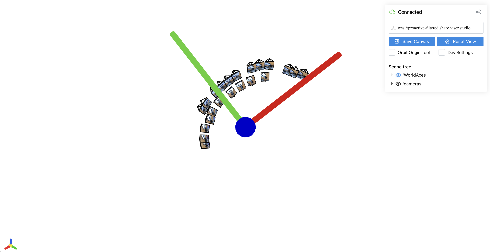
0.4 — Undistortion & Dataset Packaging
Using the intrinsics and distortion coefficients, I undistorted every object image with
cv2.undistort, then split them into train/val/test sets and saved a NeRF-style
dataset:
images_train: (N_train, H, W, 3)
images_val: (N_val, H, W, 3)
c2ws_train: (N_train, 4, 4)
c2ws_val: (N_val, 4, 4)
c2ws_test: (N_test, 4, 4)
focal: float
This NPZ file (data/final_data.npz) is loaded directly by my NeRF training script
in Part 2.6.
Part 1 — Fitting a Neural Field to a 2D Image
Before the full 3D NeRF, I implemented a simpler 2D neural field that maps 2D
coordinates to RGB values. This is essentially a tiny NeRF in 2D:
F(u, v) → (r, g, b).
Model Architecture
The model is an MLP with sinusoidal positional encoding (PE) on the input coordinates:
- Input: 2D coordinates normalized to [0, 1] (x / W, y / H).
- Positional encoding:
L = 10frequency levels, mapping 2 → 42 dims. - MLP: 6 hidden layers, width
W = 256, ReLU activations. - Output: 3 channels (RGB) with a final Sigmoid, predicting colors in [0, 1].
- Loss: MSE between predicted and ground-truth RGB.
- Optimizer: Adam with learning rate
1e-2. - Batching: Randomly sample 10k pixels per iteration to fit within memory.
Training Progression — Provided Image vs My Own Image
I trained on both the provided test image of a fox and one of my own photos - a picture of the composer Sibelius. Below are snapshots of the reconstruction at different training iterations as the network slowly learns both low frequencies and high frequencies (edges and details).
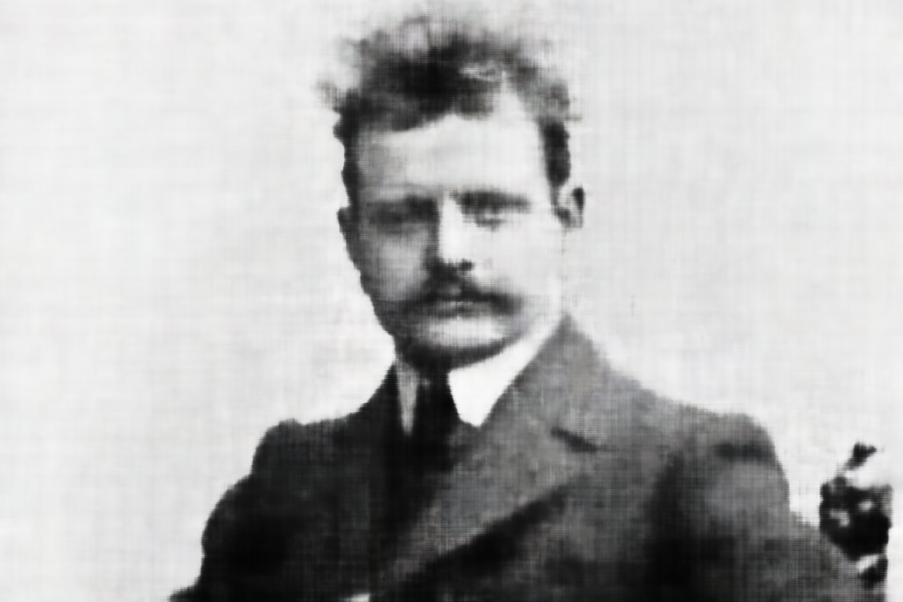
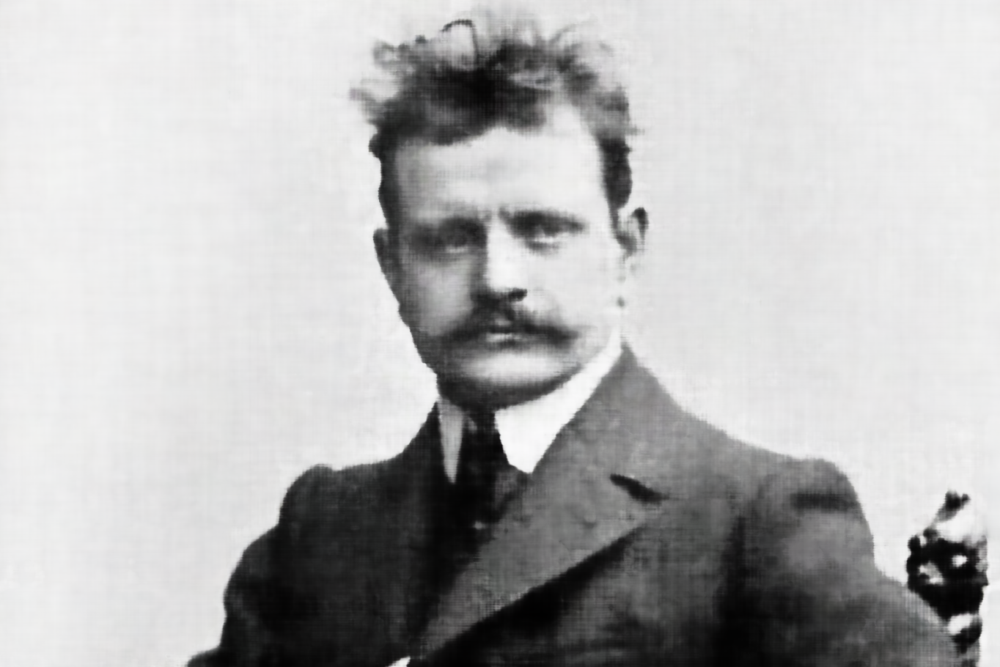
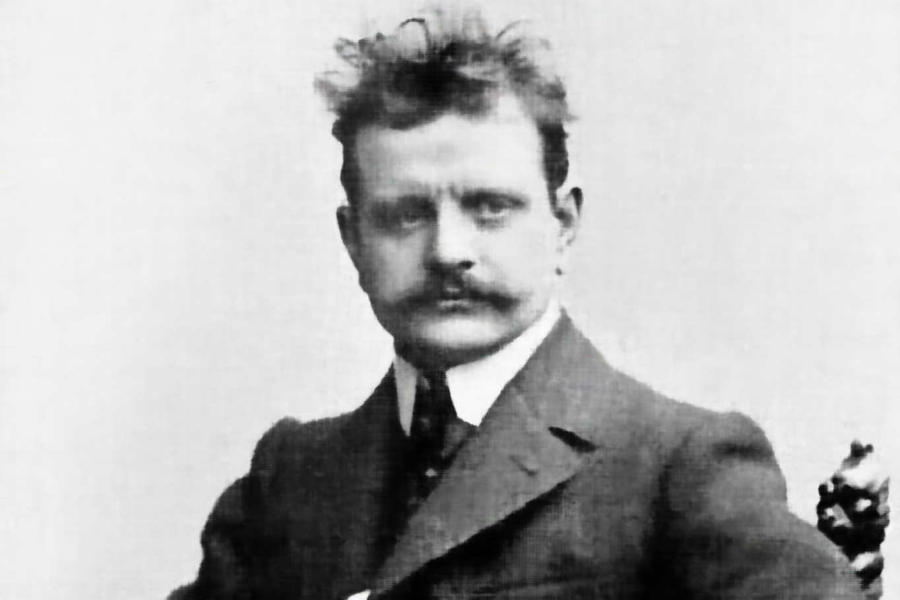
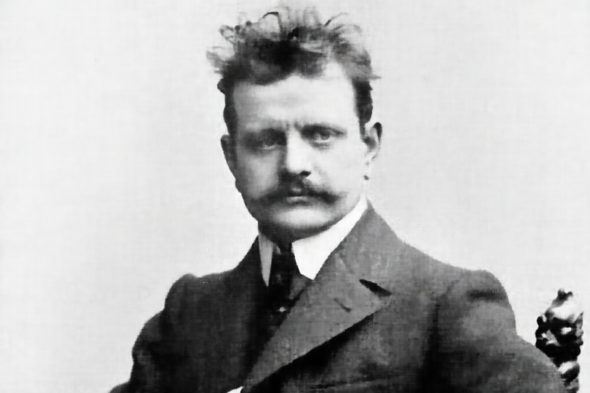
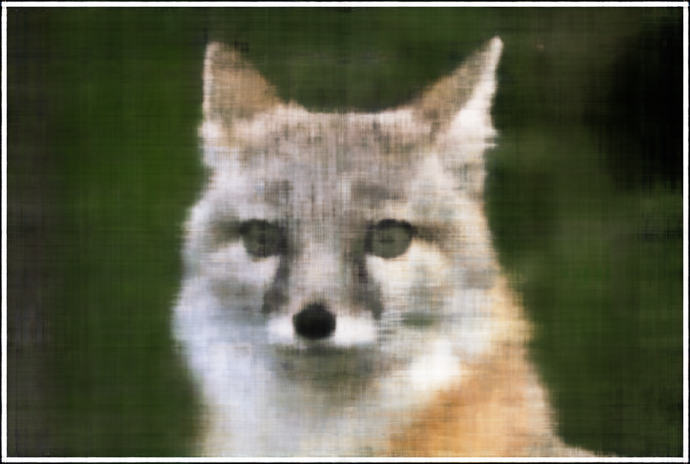
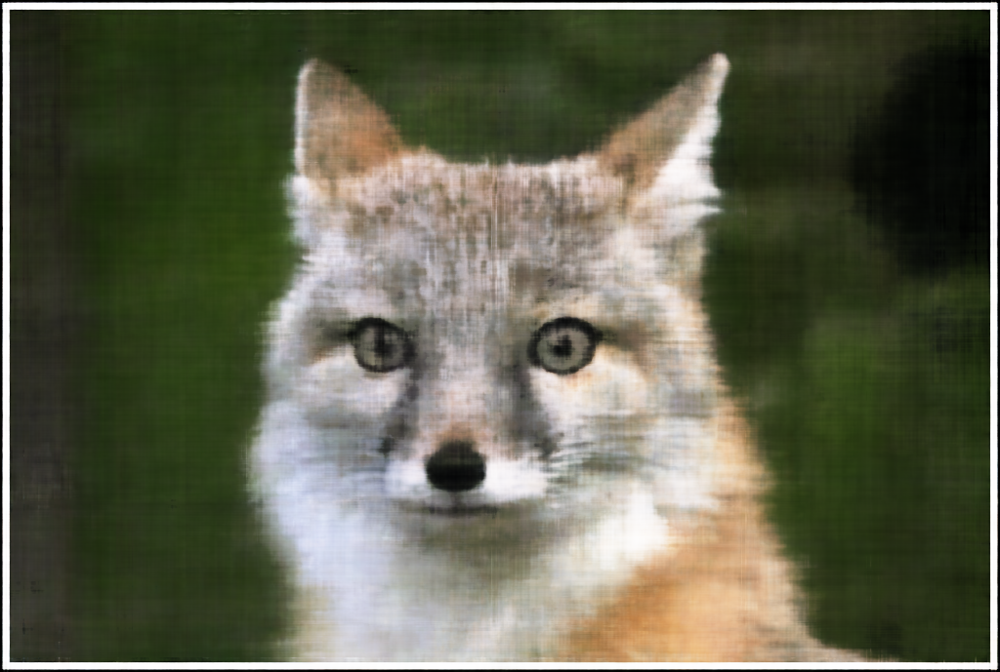
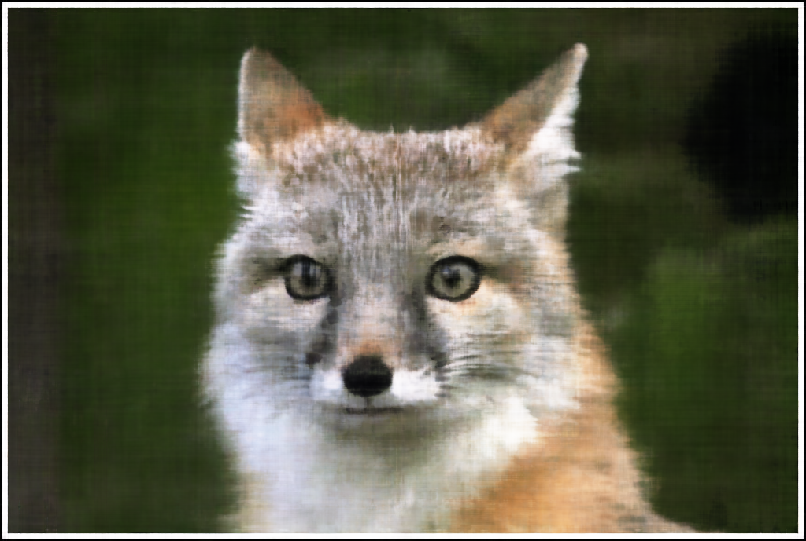
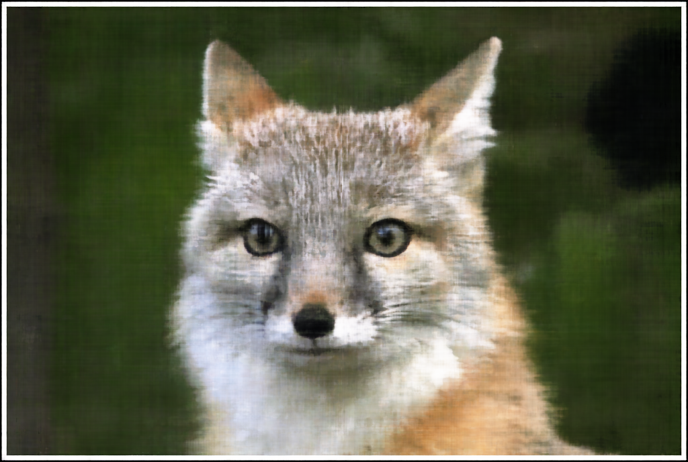
Effect of Positional Encoding and Width (2×2 Grid)
I swept over two hyperparameters:
- Maximum PE frequency
L ∈ {2, 10} - MLP width
W ∈ {32, 128}
Low L / small W produce a very smooth, low-frequency reconstruction,
while high L and larger width better capture fine text and edges.
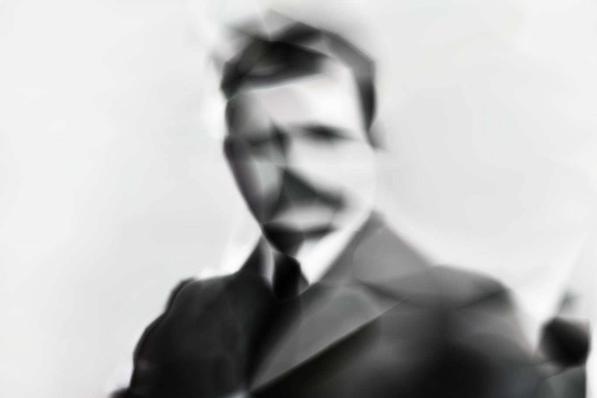
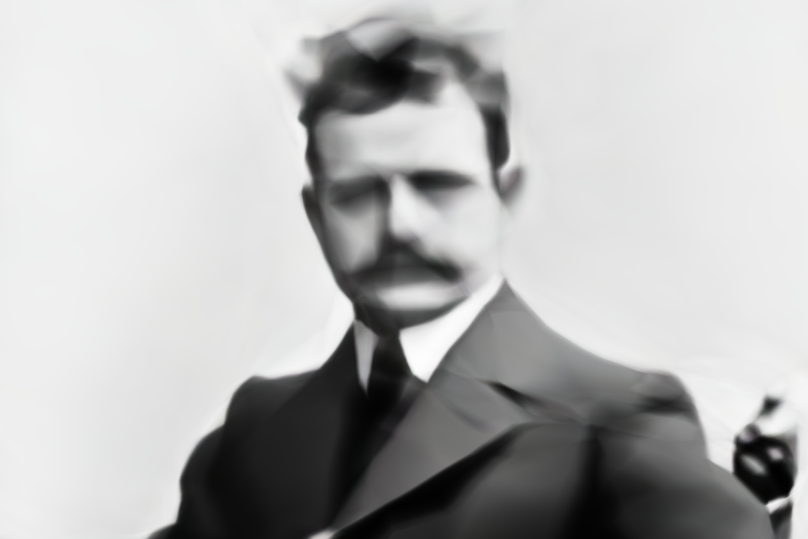
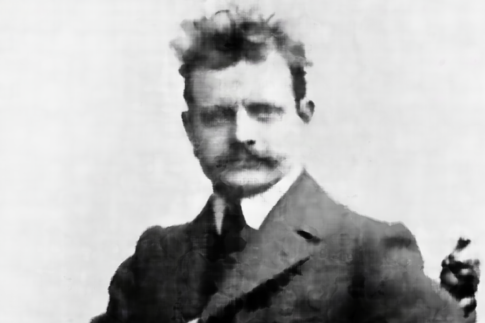

PSNR Curve
I tracked MSE and converted it to PSNR over training iterations. As expected, PSNR increases rapidly at first as the network captures low frequencies, then plateaus as it refines finer structure.
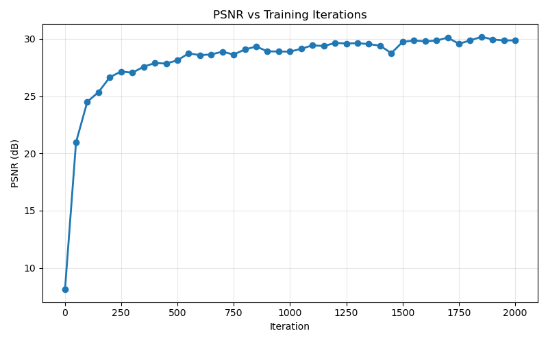
Part 2 — NeRF from Multi-view Lego Images
In Part 2, I implemented a full Neural Radiance Field for the provided Lego scene using calibrated multi-view images. This involved camera geometry, ray generation, volumetric sampling, a NeRF MLP, and volume rendering.
Implementation Overview
Here’s how I implemented each subcomponent:
- 2.1 Camera & Coordinate Transforms: Implemented a
transform(c2w, x_c)function to map camera coordinates to world coordinates, and verified it by checking thatx ≈ T⁻¹(T(x)). - 2.1 Pixel → Camera → Ray: Implemented
pixel_to_camera(K, uv, s=1)to invert the projection for a given depth, andpixel_to_ray(K, c2w, uv)to produce ray origins and directions in world space. - 2.2 Ray & Point Sampling: Sampled rays across images and discretized
each ray into
n_samplespoints between a near and far plane, with optional jitter during training for stratified sampling. - 2.3 Dataloader: Wrote a
RaysDataclass that returns(rays_o, rays_d, target_rgb)batches by randomly sampling pixels across all training images. - 2.4 NeRF Network: Implemented an MLP that takes PE-encoded 3D positions and
view directions and outputs a density
σand colorrgbfor each sample point. - 2.5 Volume Rendering: Implemented the discrete volume rendering equation to integrate colors along each ray using the predicted densities and per-step distances.
Visualization of Cameras, Rays, and Samples
Using viser, I visualized the Lego training cameras (frustums), a subset
of sampled rays, and the 3D sample points along those rays. This confirmed we had a valid dataset, ready for NeRF training.
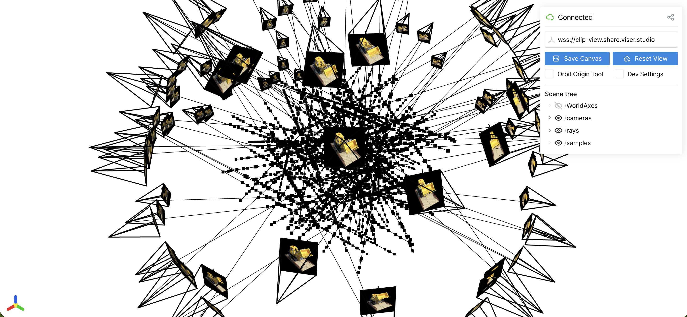
Training Progression (Lego)
I trained on random rays from the 100 training views, periodically rendering a full validation image from one of the 10 validation cameras. Below are snapshots from a held-out view rendered at different iterations.
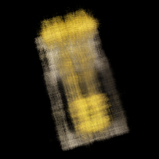
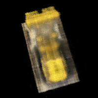
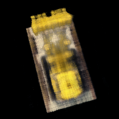
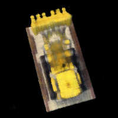
PSNR on the Validation Set
I evaluated PSNR on all 10 validation views every few hundred iterations. The curve rises steadily and saturates around the target PSNR of 23 dB.
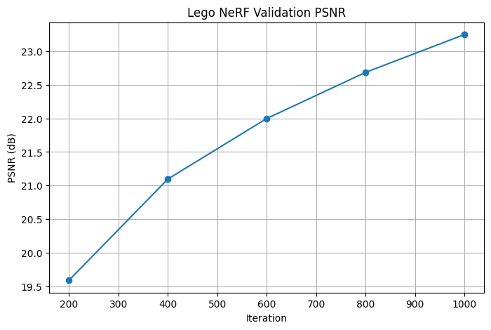
360 Degree Rendering GIF (Lego)
Finally, I created a GIF by sweeping through the 60 test camera poses
(c2ws_test), which traces a nice path around the Lego model, and rendering images for each pose, then compiling them together.
Part 2.6 — Training NeRF on My Own Data
In the final part, I reused the entire NeRF pipeline on my own captured object using the dataset from Part 0. The only differences are the camera paths and near/far planes, which I tuned to match the scale of my real-world setup.
Code & Hyperparameter Adjustments
Compared to the Lego training, I made a few practical changes:
- Image downscaling: My phone images were high resolution, so I downscaled them
by a factor (e.g.
RESIZE_FACTOR = 0.25) and scaled the focal length and principal point accordingly in the intrinsics matrix. - Near/Far planes: The object and tag were much closer to the camera than the Lego
scene, so I used near and far values like
near = 0.2,far = 0.5. - Sampling: I experimented with different numbers of samples per ray; for my final run I used 48 samples per ray, still comfortably in GPU memory in Google Colab and producing smooth geometry.
- Batch size: 4096, reasonable on Google Colab.
- Number of iterations: 3000, felt worth it to increase PSNR.
Training Loss Curve
I logged the training loss every iteration and plotted it over time. The curve decays similarly to the Lego run, but with slightly more noise due to real-world lighting and exposure variations.
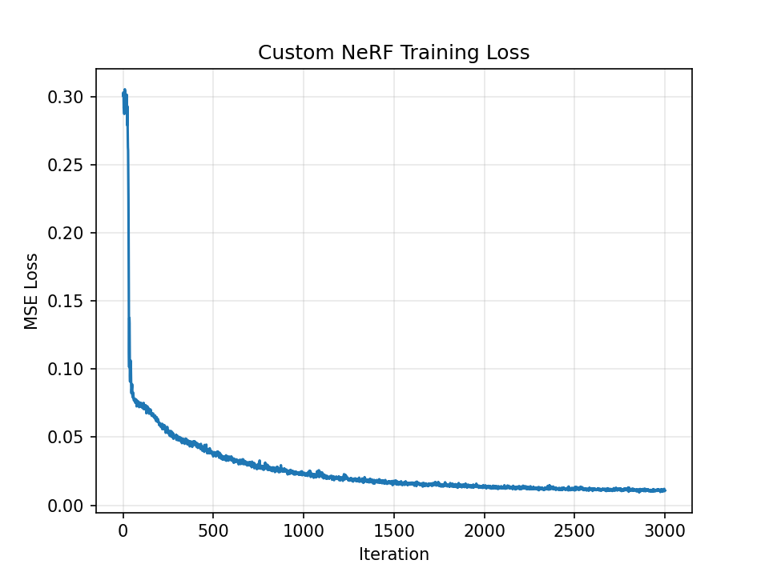
PSNR Curves (Train vs Validation)
In addition to tracking raw MSE, I also converted the training and validation losses into PSNR. The training PSNR steadily increases and slowly plateaus as the network fits the captured views, while the validation PSNR is much noisier and saturates at a relatively low value. This gap highlights how challenging it is for NeRF to generalize across my real-world capture, which has imperfect coverage and lighting.
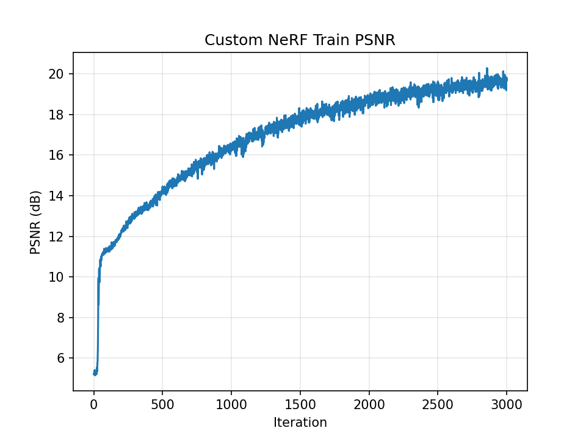
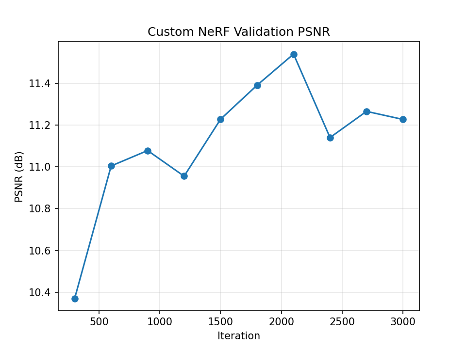
Intermediate Renders During Training
As with the Lego scene, I periodically rendered one of the validation views from my custom dataset to see how the reconstruction improved over time.
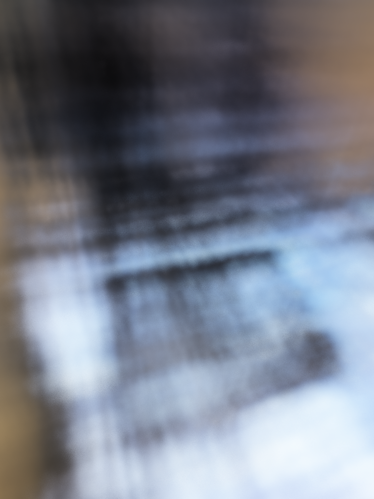
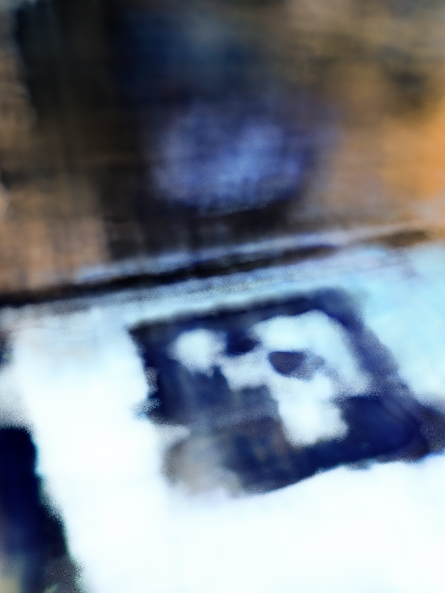
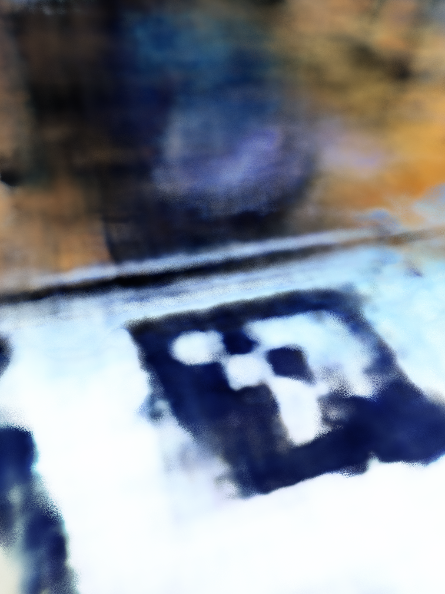
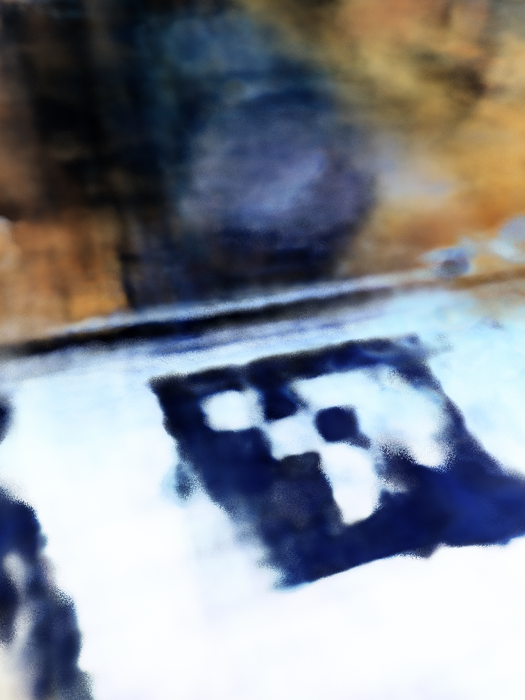
Novel View GIF (Camera Circling My Object)
Finally, I generated a sequence of novel views by moving the camera along a circular path around the object and rendering from each pose with the trained NeRF. The frames are stitched into a GIF:
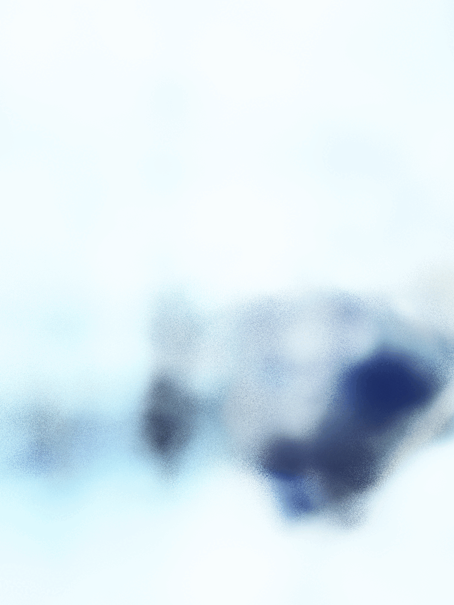
Appendix — Failure Cases & Debugging
Getting any decent result using my custom object was a struggle for this project. Those previous results were from a 2nd attempt. Below are a few of the more interesting failure modes I ran into while building this project, and what they taught me about NeRFs and data capture.
A.1 — Mis-captured Camera Poses (Bad Viser Cameras)
In my first attempt at capturing my custom object, I didn't keep my iPhone at a fixed distance from the object while walking around it. As a result, the pose estimation and reconstructed camera frustums looked very inconsistent, with cameras jumping in and out instead of forming a smooth ring around the object.
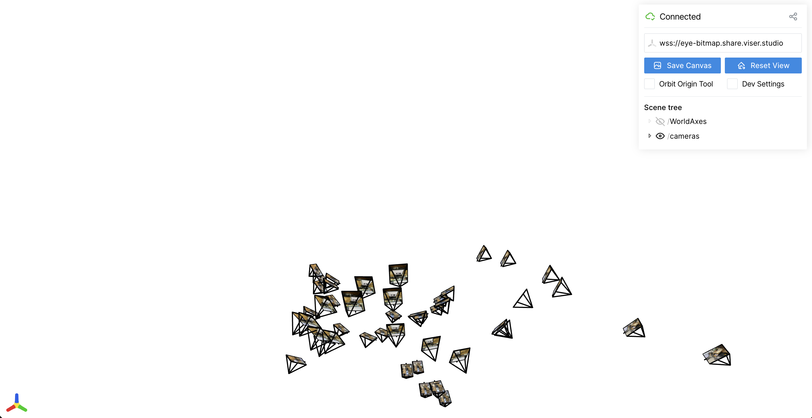
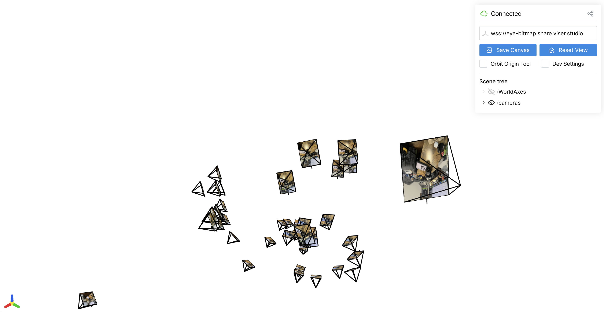
A.2 — Failed Custom NeRF Attempts
I initially tried to train a NeRF on the mis-captured dataset anyway. Unsurprisingly, the model struggled to reconcile the inconsistent camera poses and lighting, and the resulting novel-view GIFs looked like smeared clouds of colors instead of a solid object.

terrible_v1_custom.gif — training on the mis-captured dataset where camera distance
and coverage were highly inconsistent. The NeRF cannot agree on a single 3D explanation and
collapses into a noisy, abstract swirl. Looks cool but it is not the desired result.
Takeaways
- Neural fields can represent both 2D images and full 3D scenes when combined with proper coordinate parameterizations.
- Positional encoding is crucial for capturing high-frequency detail; low-frequency networks alone severely blur textures.
- Correct camera calibration and intrinsics/pose handling are just as important as the network architecture for NeRF quality.
- Volume rendering with accumulated transmittance ties densities and colors together in a physically meaningful way, enabling realistic occlusions and view-dependent effects.
- Real-world NeRFs introduce extra challenges (lighting changes, imperfect capture geometry) but the same core pipeline still works with careful tuning.